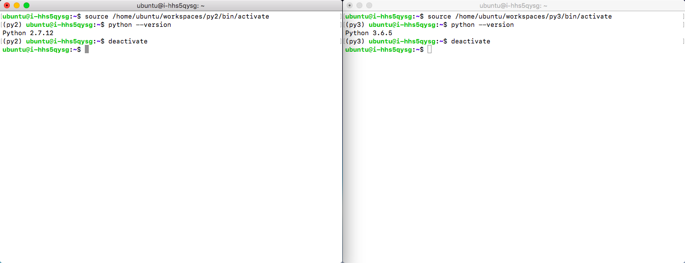

深度学习平台启动指南
启动环境
非容器版：激活VirtualEnv
非容器版深度学习平台使用 VirtualEnv 来管理 Python 环境，Python 的版本为 2.7 和 3.6 ，并装有 numpy，scipy，pandas，matplotlib，nltk，scikit-learn，jupyter notebook 等常用工具包。下面将以 MNIST 数据集为例，分别测试 Caffe，TensorFlow，PyTorch 和 Keras。
平台已经为用户安装好了 Python 2.7 和 Python 3.6 的 VirtualEnv 环境，并在其中预装了深度学习框架和常用工具包，放在 ubuntu 用户根目录的 workspaces 文件夹，py2 和 py3 分别对应 Python 2.7 和 3.6 版本。用户登录后，使用如下命令激活和退出
source /home/ubuntu/workspaces/py2/bin/activate
deactivate
source /home/ubuntu/workspaces/py3/bin/activate
deactivate
VirtualEnv 的激活和退出

说明
建议在任何框架上运行程序前都用如上方法选择 Python 运行环境，安装和更新 Python 库也在 VirtualEnv 中进行，保持系统自身 Python 环境的清洁，并实现在同一个系统中不同版本的 Python 和框架共存。
用户可以将自己常用环境的激活命令增加到 .bashrc 中，这样登录后即可自动激活对应版本 Python 的运行环境。
在一个环境激活后，直接输入 Python 命令即可运行对应版本的 Python，不需要显式指定 Python2 或 Python3，输入命令前注意命令提示行开头小括号中的信息，py2 和 py3 分别对应 2.7 和 3.6 版本的 Python。
深度学习平台为用户准备了环境完整性测试样例，放在 ubuntu 用户根目录的 test 文件夹，使用 MNIST 数据集对 Caffe, TensorFlow, PyTorch 和 Keras 进行测试。
说明
MNIST 是著名的手写数字数据集，包含 0~9 十个各种风格的手写数字，经常用于深度学习入门及测试。其内容分为训练集和测试集，训练数据集包含 60,000 个样本，测试数据集包含 10,000 样本，数据集中的每张图片由 28x28 个像素点构成。
Deep Learning 训练往往需要大量的数据，数据存储经常占用很大的空间。OIS可以存储海量数据，用户可以方便的把数据放在OIS，再使用OIS 命令行工具快速的下载到本地，非容器版存到 /data 目录的数据，可以在启容器时通过 -v 映射进容器使用。如果在环境设置中配置好了OIS，从OIS 获取数据：
cd /home/ubuntu/tensorflow
mkdir data
qsctl cp -r qs://mydata/ data/
节点登录信息：ubuntu/p12cHANgepwD
容器版：启动容器
- 用户需要获得运行 docker 的权限，可以在每条命令之前使用 sudo ，也可以获得 root 用户的执行权限运行 docker
sudo su
- 若使用 GPU 容器版，启动命令为:
sudo nvidia-docker run -it --rm --name CONTAIN_NAME -p HOST_PORT:CONTAIN_PORT \
-v HOST_VOLUME:CONTAIN_VOLUME --net YOUR_DOCKER_NET --ip SPECIFIC_IP --expose=EXPOSED_PORTS \
yiqiyun/deeplearning:1.0-py27-cu91-cudnn7.1 /bin/bash
- 若使用 CPU 容器版，启动命令为:
sudo docker run -it --rm --name CONTAIN_NAME -p HOST_PORT:CONTAIN_PORT \
-v HOST_VOLUME:CONTAIN_VOLUME --net YOUR_DOCKER_NET --ip SPECIFIC_IP --expose=EXPOSED_PORTS \
yiqiyun/deeplearning:1.0-py27-cpu /bin/bash
- 容器名字、容器 IP 地址、端口映射查看:
sudo docker inspect your_contain_id | grep -i IPAddress
-
单机训练启动：
使用内置镜像 qiyiqun/deeplearning:1.0-py27-cu91-cudnn7.1 启动容器，并且通过 -v 参数挂载测试用例，测试用例在宿主机 /home/ubuntu/test 目录，若用户在容器启动时未挂载测试用例，则可以从这里下载
sudo nvidia-docker run -it --rm --name test -p 8888:8888 -p 6006:6006 -v /home/ubuntu/test:/root/test yiqiyun/deeplearning:1.0-py27-cu91-cudnn7.1 /bin/bash
-
分布式训练启动：
容器版分布式训练，需要设置容器共享主机网络。这里采用两台主机 node1:192.168.1.4，node2:192.168.1.5 进行实验，在 node1 和 node2 上各启动一个容器：
sudo nvidia-docker run -it --rm --name test01 -v /home/ubuntu/test:/root/test --net host yiqiyun/deeplearning:1.0-py27-cu91-cudnn7.1 /bin/bash
网络模式采用 host 模式，容器共享主机网络，即容器的 IP 地址分别为：192.168.1.4和192.168.1.5 因容器版共享主机网络，所以容器版分布式训练方式和非容器版相同。